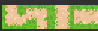

The Purple Dels TowerDefense
What is this project about?
This is my Tower Defense for the period 5 BO. In my Tower Defense, you have to protect the Flower Garden from evil purple Delete Viruses.
You can buy 2 different towers to help defend better. For every virus you kill,
you earn 25 coins. Unfortunately,
if you lose your 8 health, you'll be deleted by Del the virus.
There are 5 waves you need to survive to win.
Project date: From september 2024 to november 2024
Project duration: 2 months.
Development Team: alone.
Engine: Unity Engine
Programming language: c#
My role & contribution in this project.
In this project, I was responsible for everything from start to finish. I came up with the concept of defending the Flower Garden against Delete Viruses and developed all the gameplay mechanics, including tower purchasing, coin rewards, and the health system. I designed and coded the 5 waves of increasing difficulty, ensuring that the balance and progression felt challenging but fair. Additionally, I handled the entire design process, from creating the visuals to programming all the game logic, making sure the game was both fun and functional. .


This is what the shop and the pause screen look like
I made the shop so you can buy the towers.
You have two specific towers: one is a slow shooter,
and the other is a fast one that deals more damage to the enemy.
You can earn currency by shooting and killing the enemies; after that,
you can collect 25 coins. Once you reach 100 coins, you can buy more.
I created this system to enhance gameplay, and it looked great to make it like this!
Additionally, I implemented a pause screen to provide an easy way to exit the game if you want to leave, restart, or take a break.
The EnemyMovement script makes an enemy follow a path in a simple 2D game. Here's how it works:
The enemy has a speed and moves from one point (called a waypoint) to the next on a path.
When the enemy reaches a point, it moves to the next one.
If it reaches the final point, the enemy disappears (is destroyed).
The script tells the game which direction the enemy should go and how fast it should move.
In short, it makes the enemy follow a set route and removes it when it finishes!


I created this path and flowers myself as art for the game. I designed it in Aseprite, and it took me two weeks to complete! This project was really different from what I usually do because I decided to be my own artist instead of relying on downloaded assets. I loved experimenting with colors, shapes, and styles. It gave me a glimpse into the life of an artist and how hard they actually have to learn to make it.